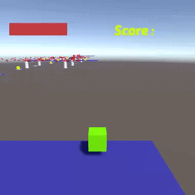
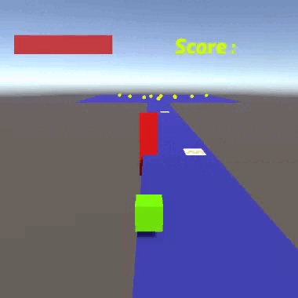
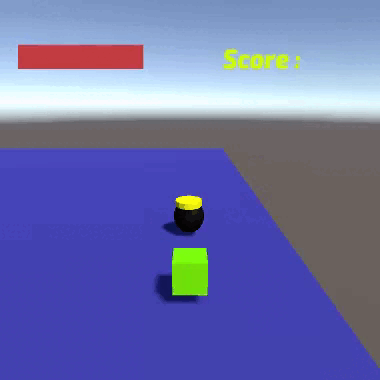
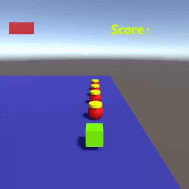
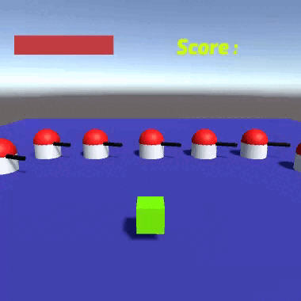
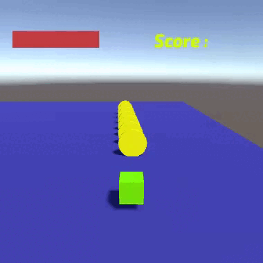
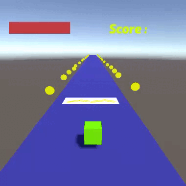

Programmation
en C#
Dans ce projet, nous découvrons la programmation orientée objet en C# avec Unity, offrant ainsi une
approche ludique et enrichissante pour maîtriser ce langage.
Introduction
Au lycée, notamment en spécialité NSI, l'enseignement se limite généralement au langage Python. Cependant, grâce à ce projet, j'ai pu élargir mes compétences en explorant un autre langage, le C#. Cela m'a permis de découvrir les fondamentaux du langage C# et d'acquérir une compréhension approfondie de ses spécificités, en mettant particulièrement l'accent sur la syntaxe et l'orienté objet.
Objectif
L'objectif de ce projet est d'apprendre le langage C# de manière progressive en programmant diverses mécaniques telles que les sauts, les déplacements, la gestion de la vie, du score, de la mort, des dégâts, etc. À la fin, l'ensemble aboutit à un prototype de jeu de parcours fonctionnel.
Les mécaniques
À chaque fois qu'il meurt, le joueur réapparaît au début du parcours (lobby). Il peut rencontrer plusieurs façons de mourir, présentées ci-dessous.
Les chutes de map
Dès que le joueur tombe de la map, il va respawn (réapparaître) au point de départ.
Le dessous de la carte est composé d'un vaste sol invisible et transparent. Au contact du joueur, cela déclenche le script de mort.
Les murs pièges
Les murs pièges représentent un obstacle majeur vers la fin du parcours ; le joueur doit les éviter tout en maintenant une vitesse élevée.
Ils opèrent selon le même principe que le mur invisible mentionné précédemment : au contact, le script de mort est déclenché.
La potion de mort
Un piège qui peut se révéler fatal pour le joueur s'il n'est pas attentif à son environnement.
Au contact avec le joueur, la potion de mort déclenche directement le script de mort. Sa couleur noire est révélatrice de sa dangerosité.
La potion de soin
Une aide qui peut se révéler précieuse si le joueur est opportuniste.
Au contact avec le joueur, la potion de vie soigne le joueur de 10 points de vie (sur 100) grâce au script "PvRamassable".
La tourelle
La tourelle représente l'un des obstacles les plus difficiles à éviter en raison de ses projectiles.
Elle envoie des projectiles dans toutes les directions qui, au contact, retirent 10 points de vie au joueur via le script "BalleProjectile".
La pièce
Conçu pour les joueurs qui apprécient les récompenses tout en étant prêts à prendre des risques.
La pièce ajoute 10 points au score du joueur au toucher, grâce au script "PointRamassable".
La plateforme de boost
La plateforme de boost ajoute un défi supplémentaire au jeu.
Dès que le joueur passe dessus, sa vitesse est augmentée de 25 (la vitesse étant à 10 par défaut) pendant une durée de 5 secondes. Ensuite, il doit attendre 5 secondes pour bénéficier à nouveau du boost. Tout cela est géré via le script "boost".
Lien GitHub
Cliquez sur le bouton pour accéder aux fichiers source du projet.